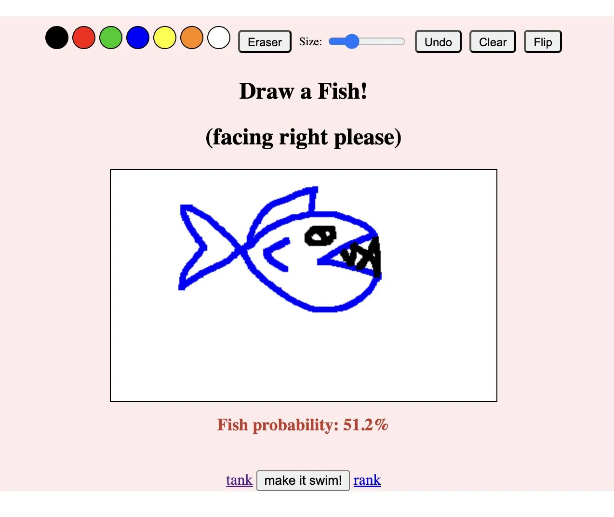

When AI decides whether your drawing is a fish
Originally posted on LinkedIn, September 29, 2025.
I drew what I was sure was a fish: an eye, a tail, scales, even air bubbles. But when I uploaded it to Draw A Fish, the model returned a score of 42% "fish confidence." Too low. The drawing was rejected.
Draw A Fish spread across the web in September 2025 with a simple premise. Draw a fish, and if the model is convinced, it will swim in a shared aquarium alongside other people's drawings.
Behind that charming game is an experiment in the gap between human intuition and the limits of machine learning. To pass the threshold, your fish has to look "fish enough" to the algorithm. But what does that mean? Fish drawings come in countless styles, including realistic, comic, and schematic, yet the model has a taste and perhaps even a preference.
Sometimes it seems to favor symmetrical fish. Sometimes one eye is not enough. Anyone who tries to be creative quickly discovers that there are rules, even if they are not written down.
That raises a more interesting question. As models become more open, are we adapting our thinking to fit the patterns that satisfy them? In Draw A Fish, the machine is the judge. Something nonhuman decides what enters the aquarium and what stays outside.
Based on my fish, I may be better off sticking to software development.
